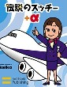
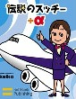

（192）伝説のスッチー ぱーと３ 解答
２種牌にまたがる変則四門張でテンパイした。どの牌でもダマロンできるが、得点はA＞B＝C＝Dとなる。さてどのような手であろうか、その一例を示して欲しい。なお当カテゴリーの基本ルールはココに記載。（by ASAMI）
難波英人 投稿日：2008/11/08(Sat)


４０符１翻
４０符２翻
あさみ 投稿日：2008/11/08(Sat)
さすが難波さん、みごとで〜す。(^-^)/
Mahjan riddles 牌謎。
（192）伝説のスッチー ぱーと３ 解答
２種牌にまたがる変則四門張でテンパイした。どの牌でもダマロンできるが、得点はA＞B＝C＝Dとなる。さてどのような手であろうか、その一例を示して欲しい。なお当カテゴリーの基本ルールはココに記載。（by ASAMI）
難波英人 投稿日：2008/11/08(Sat)
あさみ 投稿日：2008/11/08(Sat)
さすが難波さん、みごとで〜す。(^-^)/